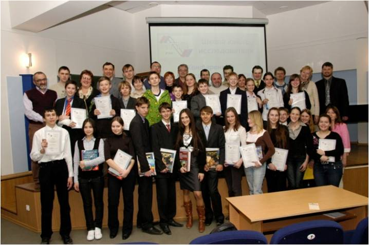

VIII
итоговая городская конференция
исследовательских
работ школьников
«Школа
юного исследователя»
|
|
|
Жюри конференции:
Председатели секций:
1. Лапинов Александр Владимирович, д.ф.-м.н.,
зав.лаб. ИПФ РАН, председатель Нижегородского регионального
отделения общества «Знание»
2. Родченков Владимир Ильич, д.х.н., в.н.с. ИПФ РАН
3. Яхно Татьяна Анатольевна, д.б.н., с.н.с.
ИПФ РАН
4. Рейман Александр Михайлович, к.ф.-м.н., с.н.с. ИПФ РАН
5. Зотова Ирина Владимировна, к.ф.-м.н., с.н.с. ИПФ РАН
6. Яковлев Иван Владимирович, к.ф.-м.н, н.с. ИПФ РАН
Членыжюри:
7. Гарасев Михаил Алексеевич, к.ф-м.н., н.с. ИПФ РАН
8.Ермолаев Николай Леонидович, к.х.н., с.н.с. ИПФ РАН
9. Кочаровская Екатерина Рудольфовна, к.ф.м.н, с.н.с. ИПФ РАН
10. Кукушкин Владимир Александрович, д.ф.-м.н., с.н.с. ИПФ РАН
11. Макаров Дмитрий Сергеевич, к.ф.-м.н, н.с. ИПФ РАН
12. Нуйдель Ирина Владимировна, к.ф.-м.н., с.н.с. ИПФ РАН
13. Пирогов Лев Евгеньевич, к.ф.-м.н., с.н.с. ИПФ РАН
14. Гачева Екатерина Игоревна, м.н.с.
ИПФ РАН
15. Кузнецов Иван Игоревич, м.н.с.
ИПФ РАН
16. Санина Ольга Анатольевна, м.н.с.
ИПФРАН
17. Серов Евгений Александрович, м.н.с.
ИПФ РАН
18. Беликович Михаил Витальевич, аспирант ИПФ РАН
19. Оладушкин Иван, лаб.-исследователь ИПФ РАН
20. Умнягина Александра Михайловна, ст.лаб.-исследователь ИПФ РАН
21. Поплаухина Екатерина Константиновна, студентка 3 курса ВШОПФ
22. Разумов Дмитрий Дмитриевич, студент 3 курса ВШОПФ
Секция : Физика
1 место
|
№ |
Ф.И. школьника |
Шк./кл |
Тема |
Ф.И.О. руководителя |
|
1 |
Ермолаев
Артем |
№ 45, 11 кл. |
Экспериментальное и
теоретическое исследование формирования ОКТ-изображения |
Агрба П.А.,
к.ф.-м.н, ИПФ 360 мнс, педагог ШЮИ ННЦ РАН |
|
2 |
Ершов Александр |
лицей 36, 11 кл |
Цикл Стирлинга,
макетный образец его реализации разных типов и перспективы его применения |
Коротаев Д.В., ИПФ
180 мнс, педагог ШЮИ ННЦ РАН |
|
3 |
Самсонов
Александр |
№ 11, 11 кл. |
Исследование свойств низкотемпературных
теплоизоляционных материалов или так ли хорош русский валенок? |
Большаков
О.С., ИПФ 180 мнс, педагог ШЮИ ННЦ РАН |
|
4 |
Гежес
Петр |
лицей 40, 10кл. |
Изготовление и исследование свойств зонной пластинки
Френеля |
Кузьмин А.А., ИПФ
370 мнс, педагог ШЮИ ННЦ РАН |
|
5 |
Локтев Федор |
лицей 40, 10 кл. |
Измерение фазы оптического излучения при помощи
дифракционного интерферометра |
Стукачев С.Е., ИПФ
370 мнс, педагог ШЮИ ННЦ РАН |
|
6 |
Силин Денис |
лицей 36, 10 кл. |
Исследование
влияния давления света на диэлектрические частицы, оптическая ловушка |
Мурзанев А.А., ИПФ
330 мнс, педагог ШЮИ ННЦ РАН |
|
7 |
Фомин Всеволод |
лицей 40, 10 кл. |
Система для
спекл-контрастной визуализации кровеносных сосудов |
Шилягин П.А.,
к.ф.м.н., ИПФ 340 нс, педагог ШЮИ ННЦ РАН |
|
8 |
Ермилин
Елисей |
лицей 38, 9 кл. |
Исследование
процесса формирования «резонансных конусов»
в магнитоактивной плазме |
Назаров В.В., ИПФ
мнс, педагог ШЮИ ННЦ РАН |
2 место
|
№ |
Ф.И. школьника |
Шк./кл |
Тема |
Ф.И.О. руководителя |
|
1 |
Михайлова
Ирина |
лицей 36, 11 кл |
Поведение жидкостей
при криогенных температурах. Эффект заострённого купола |
Мухин А.С., ИПФ 180
мнс, педагог ШЮИ ННЦ РАН |
|
2 |
Николенко Андрей |
лицей 40,11кл |
Определение эффективного размера молекулы кислорода |
Третьяков М.Ю.,
к.ф.м.н., ИПФ 380 снс, педагог ШЮИ ННЦ РАН |
|
3 |
Квак Дмитрий |
№ 45, 10 кл. |
Исследование поверхностного волнения с
использованием лазерного волнографа |
Байдаков Г.А., ИПФ
230 мнс, педагог ШЮИ ННЦ РАН |
|
4 |
Слиняков
Юрий |
лицей 40, 10 кл. |
Построение перестраиваемого полупроводникового
лазера с заданной длиной когерентности |
Маткивский В.А.,
ИПФ 340 мнс, педагог ШЮИ ННЦ РАН |
|
5 |
Хазанов
Григорий |
лицей 40, 10кл |
Применение лазерно-оптической анемометрии для
исследования течений в волнах на поверхности воды |
Кандауров А.А., ИПФ
230 мнс, педагог ШЮИ ННЦ РАН |
|
6 |
Лазунина Екатерина |
№ 44, 8 кл. |
Изучение процесса
прохождения звука в неоднородных «одномерных» средах (шнурах) |
Балакин М.А.,
учитель лицея 38, педагог ШЮИ ННЦ РАН |
|
7 |
Сухов Илья |
№ 55, 7 кл. |
Определение периода колебаний воды в манометре и в U-образной трубке |
Севрюгина Т.В., учитель шк., педагог ШЮИ ННЦ РАН |
3 место
|
№ |
Ф.И. школьника |
Шк./кл |
Тема |
Ф.И.О. руководителя |
|
1 |
Паршина Наталья |
НТЛ 38, 11 кл. |
Улучшение точности измерения постоянной Планка в
школьном демонстрационном эксперименте |
Битюрина В.Ю.,
учитель лицея 38, педагог ШЮИ НН РАН |
|
2 |
Валов Никита |
лицей 36, 10кл. |
Экспериментальное
исследование трансформации гравитационно-капиллярных волн под действием
течений от пузырьковой пелены |
Капустин И.А.,
к.ф.-м.н., 220 отд. ИПФ, педагог ШЮИ ННЦ РАН |
|
3 |
Горчаков
Михаил |
лицей 36, 10 кл |
Диагностика режимов генерации фемтосекундного лазера |
Бурдонов К.Ф., ИПФ
370 мнс, педагог ШЮИ ННЦ РАН |
|
4 |
Минеев Никита |
лицей 40, 10кл. |
Исследование естественной оптической активности раствора
сахара |
Кузьмин А.А., ИПФ
370 мнс, педагог ШЮИ ННЦ РАН |
|
5 |
Чижевская
Яна |
лицей 165, 10 кл. |
Оптические
элементы, позволяющие управлять поляризацией |
Кузьмина М.С., ИПФ
370 мнс, педагог ШЮИ ННЦ РАН |
|
6 |
Умнягин
Григорий |
лицей 40, 10 кл. |
Интерферометрическое измерение профиля
концентрации газовой струи для экспериментов по лазерно-плазменному взаимодействию |
Соловьев А.А.,
к.ф.м.н., ИПФ 370 нс, педагог ШЮИ ННЦ РАН |
|
7 |
Демидов
Даниил |
гим-ия 17, 9 кл. |
Разработка оптоакустического генератора
наносекундных ультразвуковых импульсов |
Субочев П.В.,
к.ф.-м.н., ИПФ нс, педагог ШЮИ ННЦ РАН |
|
8 |
Надршина
Яна |
лицей 180, 9кл. |
Расчет индуктивности внутреннего контура в системе
двух коаксиальных катушек |
Лапин Н.И., НГПУ
ассистент, педагог ШЮИ ННЦ РАН |
|
9 |
Филимонов
Александр |
лицей 38, 9кл. |
Зависимость величины эффекта Фарадея от длины волны
излучения в некоторых магнитооптических средах |
Железнов
Д.С., к.ф.-м.н., ИПФ нс, педагог ШЮИ ННЦ РАН |
Секция : МАТЕМАТИКА
2 место
|
№ |
Ф.И. школьника |
Шк./кл |
Тема |
Ф.И.О. руководителя |
|
7 |
Кудряшова
Дарья |
лицей 36, 11 кл |
Кривые Уатта |
Фильченков С.Е.,
к.ф.-м.н., ИПФ РАН, н.с., 191 лаб., педагог
ШЮИ ННЦ РАН |
|
8 |
Коробков
Никита |
лицей 40, 10кл. |
Математическая
модель зависимости параметров цветового зрения от кардиоритма человека |
Бахчина А.В., ННГУ аспирант, педагог ШЮИ ННЦ РАН Ковальчук А.В., н.с. ИПФ РАН |
Секция : Биофизика
1 место
|
№ |
Ф.И.
школьника |
Шк./кл |
Тема |
Ф.И.О. руководителя |
|
1 |
Плотников
Ростислав |
гимназия 13, 9 кл. |
Методология
исследования поведения членистоногих |
Воловик М.Г.,
к.б.н., ННИИТО с.н.с, педагог ШЮИ
ННЦ РАН |
|
2 |
Коган Анна |
лицей 40, 7 кл. |
Исследование динамики биомассы eichornia crassipes и биогенных элементов в накопительной культуре |
Коротаева
М.И., ННГУ магистрант, педагог ШЮИ ННЦ
РАН |
|
3 |
Кравченко
Екатерина |
6 кл. |
Специфические параметры цветового зрения у воспитанников
художественной школы |
Бахчина А.В., ННГУ аспирант, педагог ШЮИ ННЦ РАН |
2 место
|
№ |
Ф.И.
школьника |
Шк./кл |
Тема |
Ф.И.О. руководителя |
|
1 |
Виленская Анна |
гимназия 13, 9 л. |
Некоторые психофизиологические
аспекты формирования никотиновой зависимости |
Вилкова Е.А.,
ННГУ инженер 1кат., педагог ШЮИ ННЦ
РАН |
|
2 |
Кочаровская Милита |
лицей 40, 9 кл. |
Влияние сложности текста на параметры движения глаз при работе с текстом |
Демарева В.А., ННГУ
магистрант, педагог ШЮИ ННЦ РАН |
|
3 |
Кудряшов
Андрей |
№ 76, 8 кл. |
Влияние локализации источника звука на параметры
движения глаз с помощью айтрекинга |
Хомякова
М.И., ННГУ ст. лаборант,
педагог ШЮИ ННЦ РАН |
|
4 |
Шестакова
Лидия |
№ 14, 9 кл. |
Исследование фотобиологических свойств
потенциальных препаратов для терапии онкологических заболеваний |
Леканова Н.Ю., ННГУ
мнс кафедра биофизики, педагог ШЮИ ННЦ РАН |
3 место
|
№ |
Ф.И.
школьника |
Шк./кл |
Тема |
Ф.И.О. руководителя |
|
1 |
Кузьминых
Александра |
№ 183, 9 кл. |
Сравнительный анализ эффективности
методов телесно-ориентированной терапии и занятий йоги методом компьютерной
кампиметрии |
Бахчина А.В., ННГУ аспирант, педагог ШЮИ ННЦ РАН |
Секция : Химия
1 место
|
№ |
Ф.И.
школьника |
Шк./кл |
Тема |
Ф.И.О. руководителя |
|
1 |
Демидов
Даниил |
гимназия 17, 9 кл. |
Исследование диаграммы состояния
Bi2Ma2O9 - Bi2W2O9 |
Князев А.В., д.х.н., профессор кафедры химии твердого тела
ННГУ |
|
2 |
Пименов
Владимир |
№ 49, 11 кл. |
Рентгенофлуоресцентное
определение селена |
Абражеев Р.В.,
к.х.н, ННГУ доцент, педагог ШЮИ ННЦ РАН |
2 место
|
№ |
Ф.И.
школьника |
Шк./кл |
Тема |
Ф.И.О. руководителя |
|
3 |
Богатова Софья |
10 кл. |
Синтез гидроксиапатита состава Ca10(PO4)6(OH)2 и исследование
его химической устойчивости |
Волочай А.А., ННГУ
аспирант, педагог ШЮИ ННЦ РАН |
3 место
|
№ |
Ф.И.
школьника |
Шк./кл |
Тема |
Ф.И.О. руководителя |
|
4 |
Черемхина
Елена |
лицей 40, 9 кл. |
Химический анализ меда |
Кострова Е.Л., ННГУ
магистрант, педагог ШЮИ ННЦ РАН |
VI итоговая городская конференция
исследовательских
работ школьников
«Школа
юного исследователя»
09.04.2012.
 |
 |
 |
 |
 |
 |
 |
 |
 |
12
апреля 2012г. в научно-образовательном комплексе Института прикладной физики
РАН состоялась VI
итоговая городская конференция исследовательских работ школьников «Школа юного
исследователя».
С
приветственным словом к участникам конференции выступили:
Владимир
Владиленович Кочаровский,
ведущий научный сотрудник ИПФ РАН, член-корреспондент
РАН, д.ф.-м.н.,
Николай Юрьевич Бабанов,
проректор по научной работе НГТУ им. Р.Е. Алексеева, доцент, к.тех.н.,
Вячеслав
Федорович Вдовин,
председатель
совета ННРО ПРАН, ведущий
научный сотрудник ИПФ РАН, профессор НГТУ, д. ф.-м.н.,
Сергей
Александрович Адамчик,
старший
научный сотрудник Института химии высокочистых
веществ им. Г.Г. Девятых РАН, зам. председателя Нижегородского научного центра РАН, к.х.н.
Жюри
конференции:
·
Адамчик
Сергей Александрович, к.х.н., с.н.с. ИХВВ РАН
·
Ермолаев Николай Леонидович, к.х.н., с.н.с. ИПФ
РАН
·
Железнов Дмитрий Сергеевич, к.ф.-м.н.,
н.с. ИПФ РАН
·
Зотова Ирина Владимировна, к.ф.-м.н.,
с.н.с. ИПФ РАН
·
Иваненков
Алексей Сергеевич, аспирант ИПФ РАН
·
Ковалев
Федор Николаевич, к.тех.н., доцент НГТУ
·
Кочаровская
Екатерина Рудольфовна, к.ф.-м.н., с.н.с. ИПФ РАН
·
Круглов
Алексей Анатольенвич, м.н.с. ИПФ РАН
·
Кукушкин Владимир Александрович, д.ф.-м.н., с.н.с. ИПФ РАН
·
Рейман Александр Михайлович, к.ф.-м.н.,
с.н.с. ИПФ РАН
·
Родченков
Владимир Ильич, д.х.н., в.н.с. ИПФ РАН
·
Сербер Александр Волькович, к.ф.-м.н., директор Нижегородского планетария
·
Стукачев Сергей Евгеньевич, м.н.с.
ИПФ РАН
·
Шайкин
Андрей Алексеевич, к.ф.-м.н., с.н.с. ИПФ РАН
Победители
и призеры конференции
|
Секция: Физика |
||||
|
№ |
Название работы |
Автор |
Научный руководитель |
Диплом |
|
1 |
Исследование
микроструктуры и спектральных характеристик растений. |
Глявина Мария, 11 кл. |
Сергеева
Е.А., к.ф.-м.н. |
1 место |
|
2 |
Составные
дифракционные решетки для сверхмощных лазерных систем. |
Логинова
Дария, 11 кл. |
Яковлев
И.В. |
1 место |
|
3 |
Исследование неоднородности распределения
интенсивности в лазерном ноже системы подсветки PIV-анемометрического комплекса. |
Квак Дмитрий, 9 кл. |
Кандауров А.А. |
1 место |
|
4 |
Исследование
автоколебаний стеклянного сосуда. |
Савкин
Сергей, 8 кл. |
Савкин
П.М. |
1 место |
|
5 |
Исследование
влияния примесей спирта на совершение работы газом. |
Титова
Софья, 8 кл. |
Севрюгина
Т.В. |
1 место |
|
6 |
Исследование
характеристик дифракционных решеток. |
Грошева Ксения, 11 кл. |
Кузьмина
М.С. |
2 место |
|
7 |
Повышение информативности ОКТ-изображений бумаги. |
Ермолаев
Артём, 10 кл. |
Агрба П.Д., к.ф.-м.н. |
2 место |
|
8 |
Микросканер эндоскопического зонда для прибора оптической когерентной
томографии. |
Калынова Елизавета,
11 кл. |
Шилягин П.А., к.ф.-м.н. |
2 место |
|
9 |
Лабораторный
комплекс для изучения работы двигателя Герца-Квинке. |
Лебедев
Всеволод, 11 кл. |
Савкин
П.М. |
2 место |
|
10 |
Изучение
свойств ферромагнитной жидкости. |
Преображенский
Глеб, 9кл. |
Битюрина В.Ю. |
2 место |
|
11 |
Определение коэффициента поверхностного натяжения жидкости. |
Рябинин
Иван, 9 кл. |
Савкин
П.М. |
2 место |
|
12 |
Измерение коэффициента поверхностного натяжения методом
капиллярных волн. |
Ермилин Елисей, 8 кл. |
Битюрина В.Ю. |
2 место |
|
13 |
Моделирование движения капель воды при ветро-волновом
взаимодействии. |
Балагуров
Владимир,
11 кл. |
Кандауров А.А. |
3 место |
|
14 |
Цикл
Стирлинга: макетный образец реализации
и перспективы применения. |
Ершов
Александр, 10 кл. |
Коротаев Д.В. |
3 место |
|
15 |
Разработка
многоканальной дистанционной охранной системы с централизованным управлением. |
Николенко Андрей, 10кл. |
Булатов А.А. |
3 место |
|
16 |
Секреты
русского валенка и изучение свойств материалов при сверхнизких температурах. |
Самсонов Александр, 10 кл. |
Большаков О.С. |
3 место |
|
17 |
Основные
принципы построения криогенных систем на примере термоса. |
Карпов
Егор, 9 кл. |
Мухин
А.С. |
3 место |
|
18 |
Исследование
зависимости ёмкости конденсатора от свойств поверхности пластин. |
Локтев
Федор, 9 кл. |
Балакин М.А. |
3 место |
|
19 |
Исследование эффекта поляризации света при отражении от
границы раздела двух сред. |
Минеев
Никита, 9 кл. |
Кузьмин
А.А. |
3 место |
|
20 |
Интерференционный метод измерения фазовых искажений,
вносимых различными оптическими компонентами лазерных установок. |
Терешкина Дарья, 9 кл. |
Гачева Е.И. |
3 место |
|
21 |
Спекл-контрастная визуализация
кровеносных сосудов. |
Фомин
Всеволод, 9 кл. |
Шилягин П.А., к.ф.-м.н.
|
3 место |
|
22 |
Некоторые
пространственно-временные аберрации линзы. |
Щенникова Анастасия, 9кл. |
Миронов
С.Ю., к.ф.-м.н. |
3 место |
|
23 |
Определение
модуля Юнга древесины. |
Агеева
Анастасия, 8 кл. |
Хазов П.А. |
3 место |
|
24 |
Определение
коэффициента Пуассона древесины. |
Максимова
Анастасия, 8 кл. |
Хазов П.А. |
3 место |
|
25 |
Изучение
явления электромагнитной индукции. |
Надршина Яна, 8 кл. |
Лапин
Н.И. |
3 место |
|
26 |
Исследование
процесса образования миражей при наличии температурного градиента. |
Ягилев Михаил, 8 кл. |
Балакин М.А. |
3 место |
|
Секция: Химия |
||||
|
1 |
Окислительно-востановительные реакции и условия их
протекания. |
Демидов
Даниил, 8 кл. |
Кулешова
Н.В., к.х.н. |
1 место |
|
2 |
Укрепление
текстильных материалов водорастворимыми акриловыми
сополимерами. |
Слепченков Александр,
10 кл. |
Томилина
А.В. |
1 место |
|
3 |
Проточно-инжекционная
кондуктометрия: определение карбонатной щелочности снеготалых
вод. |
Гущин
Тимофей, 10 кл. |
Елипашева Е.В., к.х.н. |
2 место |
|
4 |
Коллоидно-химические свойства амфифильных
акриловых сополимеров. |
Красинова Анастасия,
10 кл. |
Томилина
А.В. |
2 место |
|
5 |
Рентгенофлуоресцентный анализ монетных
сплавов. |
Пименов Владимир,
10 кл. |
Абражеев Р.В., к.хим.н. |
2 место |
|
6 |
Химические
методы контроля качества молока. |
Прокопенко
Мария, 9кл. |
Годованова Н.С. |
2 место |
|
Секция: Математика и
прикладная информатика |
||||
|
1 |
Кривые
Уатта. |
Кудряшова
Дарья,
10 кл. |
Фильченков С.Е., к.ф.-м.н. |
2 место |
|
2 |
Векторизация
водных объектов на спутниковых снимках. |
Рой Виктор, 11 кл. |
Калинин П.А., к.ф.-м.н. |
2 место |
|
3 |
Сечение
плоскостей второго порядка. |
Иванова
Анастасия, 10 кл. |
Фильченков С.Е., к.ф.-м.н. |
3 место |
|
Секция: Астрономия |
||||
|
1 |
Фотометрические
исследования катаклизмической переменной ER
Uma. |
Кабаев Кирилл, 11 кл. |
Перхняк А.Н. |
2 место |
|
2 |
Определение
основных характеристик небесных объектов исходя из наблюдения их в телескоп. |
Леер
Никита, 10 кл. |
Перхняк А.Н. |
2 место |
|
3 |
Влияние
городской засветки на качество астрономических наблюдений. |
Угаров Юрий, 11 кл. |
Перхняк А.Н. |
2 место |
|
Секция: Биофизика |
||||
|
1 |
Тепловизионное исследование нейробиологического
взаимодействия симметричных зон при односторонней холодовой
стимуляции. |
Каменская Элина, 11 кл. |
Воловик М.Г., к.б.н. |
1 место |
|
2 |
Влияние изменения оптической системы глаза при близорукости
на пороги цветоразличения. |
Кочаровская Милита, 8 кл. |
Демарева В.А. |
1 место |
|
3 |
Оценка
эффективности телесно-ориентированной терапии по функции цветоразличения. |
Кузьминых
Александра, 8кл. |
Чернова
М.А. |
2 место |
|
4 |
Сенсомоторная
реакция и рекомендации по ее измерению. |
Виленская Анна, 8
кл. |
Самко Ю.А. |
3 место |
|
5 |
Оценка
экологического состояния школьных помещений. |
Лебедев
Никита, 9
кл. |
Хабибуллин
Р.Д., к.б.н. |
3 место |
V итоговая конференция исследовательских работ школьников
«Школа юного исследователя»
посвящается 50-летию полёта Ю.А.Гагарина
12 апреля 2011г.
 |
 |
 |
 |
 |
 |
|
№ |
Название |
Автор |
Научный руководитель |
|
Секция: Физика |
|||
|
1 |
Исследование флуоресценции растений. |
Глявина Мария, 10 кл. |
Сергеева Е.А., н.ф.-м.н., снс ИПФ РАН |
|
2 |
Устройство «верёвочного телефона». |
Локтев Фёдор, 8 кл. |
Балакин М.А. |
|
3 |
Генератор инфразвуковых колебаний. |
Рябинин Иван, 8 кл. |
Савкин П.М. |
|
4 |
Спекл-контрастная визуализация кровеносных сосудов. |
Фомин Всеволод, 8 кл. |
Шилягин П.А., к.ф.-м.н., нс ИПФ РАН |
|
5 |
Исследование свойств медицинского ртутного термометра |
Богданов Андрей, 8 кл. |
Троицкий Р.В., к.ф.-м.н. |
|
6 |
Анизотропия бумаги. |
Ягилев Михаил, 7 кл. |
Балакин М.А. |
|
Секция :
Прикладная информатика |
|||
|
1 |
Метод Монте-Карло и его применения. |
Ермолаев Артём, 9 кл. |
Ахмеджанов Т.Р., ст. лаб.-иссл. ИПФ РАН |
|
2 |
Векторизация водных объектов на спутниковых снимках. |
Рой Виктор, 10 кл. |
Калинин П.А., мнс ИПФ РАН |
|
Секция : Химия |
|||
|
1 |
Укрепление текстильных материалов водорастворимыми акриловыми сополимерами. |
Слепченков Александр, 10 кл. |
Томилина А.В., мнс ННГУ, аспирант |
Победители IV итоговой конференции
исследовательских работ школьников
Кутлин Антон 9 класс "Ультразвуковой датчик обнаружения крупных объектов"
Лебедев Всеволод 9 класс "Двигатель Герца - Квинке"
Коновалов Даниил 8 класс "Возникновении подъемной силы при вращении цилиндра в воздухе"
Раксин Александр 8 класс "Изучение протекания электрического тока в воздухе в условиях,
близких к ситуации грозы"
Локтев Фёдор 7 класс "Прохождение звуковых волн сквозь различные среды и устройство "Верёвочного телефона"
Бояркин Михаил 8 класс "Кофеин: определение содержания в некоторых продуктах"
Слепченков Александр 9 класс "Такой необходимый калий"
Зотова Ульяна 10 класс "Применение показателя Хёрста для прогнозирования поведения временных рядов"
Зайцев Сергей 10 класс "Моделирование статистики двумерного газа"
Конференция ШЮИ - 2009
Жюри конференции
• Е.В. Деришев
кандидат физ.-мат. наук, старший научный сотрудник ИПФ РАН
• А.А. Шайкин
кандидат физ.-мат. наук, старший научный сотрудник ИПФ РАН
• А.В. Водопьянов
кандидат физ.-мат. наук, старший научный сотрудник ИПФ РАН
• Н.В. Введенский
кандидат физ.-мат. наук, старший научный сотрудник ИПФ РАН
• А.М. Рейман
кандидат физ.-мат. наук, старший научный сотрудник ИПФ РАН
• А.О. Перминов
научный сотрудник ИПФ РАН
• В.В. Кочаровский член-корреспондент РАН, главный научный сотрудник ИПФ РАН
• С.А. Корягин
кандидат физ.-мат. наук, старший научный сотрудник ИПФ РАН
• В.И. Родченков
доктор хим. наук, ведущий научный сотрудник ИПФ РАН
• Н.Л. Ермолаев
кандидат хим.наук, старший научный ссотрудник ИПФ РАН
• А.А. Тельных
программист ИПФ РАН
• О.В. Шемагина
программист ИПФ РАН
• Г. А. Мкртычян, доктор психол. наук, профессор ННГУ им. Н.И.Лобачевского
• С.Ю. Савинова кандидат пед.наук, доцент НГЛУ им. Н.А. Добролюбова
Победители конференции 2009
Сироткин Дмитрий (7 класс) «Изучение явления капельной радуги»
Преображенский Глеб (6 класс) «Вольтметр электромагнитной системы»
Сучкоусов Андрей (8 класс) «Опыт Джоуля»
Шалаева Полина (8 класс) «Особенности распространения непрерывного и импульсного лазерного излучения в призме»
Шампоров Василий и Сидоров Дмитрий (9 класс) «Исследование уровней электромагнитного излучения мобильного телефона и периферийных устройств, изучение мер защиты»
Бояркин Михаил (7 класс) «Применение тонкослойной хроматографии для идентификации овощных соков»
Холин Егор (9 класс) «Причины и особенности возникновения науки в Древней Греции в VIII-V вв. до н.э.»
Шайкина Анастасия (8 класс) "Моделирование гало"
Кривоносов Михаил (8 класс) «Хаф – пайп»
Конференция ШЮИ - 2008

Жюри конференции
• С.А. Корягин, кандидат физ.-мат. наук, с.н.с. ИПФ РАН;
• В.В. Кочаровский, член-корреспондент РАН, г.н.с. ИПФ РАН;
• Г. А. Мкртычян, докт. психол. наук, профессор ННГУ им. Н.И.Лобачевского;
• В.А. Лазарев, канд. физ.-мат. наук, с.н.с. ИПФ РАН;
• А.О. Перминов, н.с. ИПФ РАН;
• А.М. Рейман, канд. физ.-мат. наук, с.н.с. ИПФ РАН;
• В.И. Родченков, доктор хим. наук, в.н.с. ИПФ РАН;
• Е.И. Перфильева, канд. пед. наук, доцент;
• А.И. Смирнов, доктор физ.-мат. наук, в.н.с., директор научно-образовательного центра ИПФ РАН;
• А.Ю. Созин, кандидат хим. наук, н.с. ИХВВ РАН.
 |
|---|